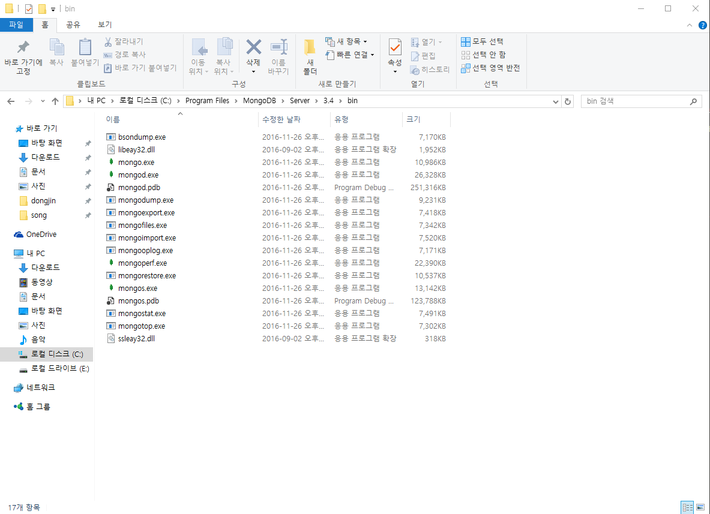
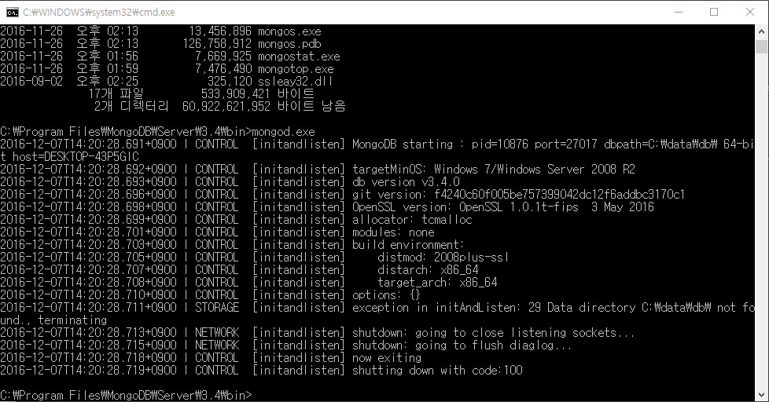
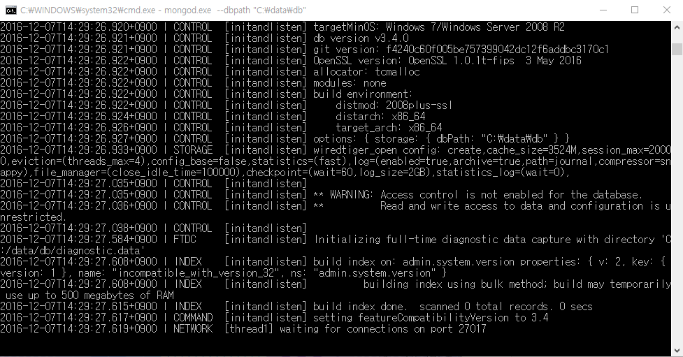
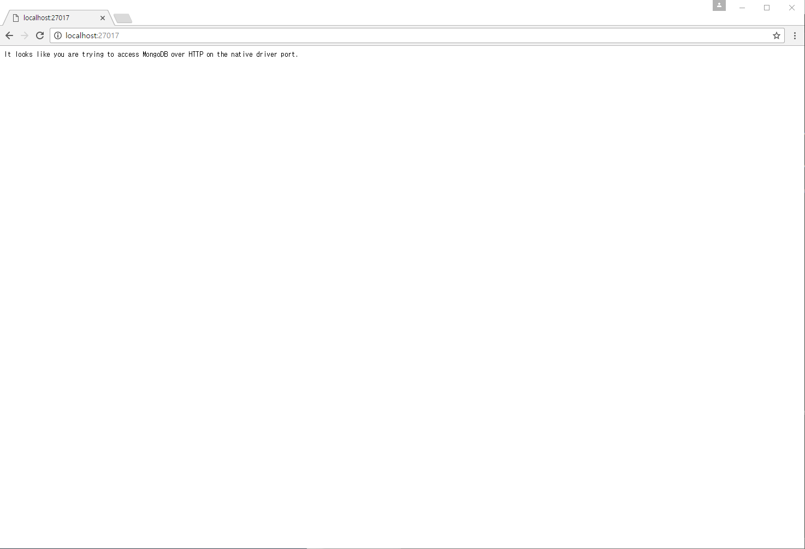

MongoDB
1. 소개1)
몽고DB(MongoDB)는 크로스 플랫폼 도큐먼트 지향 데이터베이스 시스템이다. NoSQL 데이터베이스로 분류되는 몽고DB는 JSON과 같은 동적 스키마형 문서들(몽고DB는 이러한 포맷을 BSON이라 부름)을 선호함에 따라 전통적인 테이블 기반 관계형 데이터베이스 구조의 사용을 삼간다. 이로써 특정한 종류의 애플리 케이션을 더 쉽고 빠르게 데이터 통합을 가능케 한다. 아페로 GPL과 아파치 라이선스를 결합하여 공개된 몽고DB는 자유-오픈 소스 소프트웨어다.뉴욕시에 기반을 둔 회사인 10gen (현재의 몽고DB)에서 2007년 10월, 계획된 PaaS(서비스로서의 플랫폼) 제품의 구성 요소로 처음 개발하였으며 10gen이 상용 지원 및 기타 서비스를 제공한 2009년에 오픈 소스 개발 모델로 전향하였다. 그 뒤로 몽고DB는 크레이그리스트, 이베이, 포스퀘어, 소스포지, 뉴욕 타임즈, 구글, 페이스북과 같은 수많은 주요 웹사이트 및 서비스에 백엔드 소프트웨어로 채택되고 있다. 몽고DB는 가장 유명한 NoSQL 데이터베이스 시스템이다.
2. 설치법2)
2.1. 설치
1. MongoDB 다운로드
MongoDB 파일을 아래 경로에서 내려 받는다.
https://www.mongodb.org/download홈페이지로 들어가서 스크롤을 내리면 'DOWNLOAD(msi)' 버튼이 있는데 그것을 눌러서 내려받으면 된다.
설치하는 도중에 보면 Complete과 Custom이 있는데 MongoDB를 처음 접한다면 Complete를 눌러 간편 설치를 한다.
설치가 잘 되었는지 확인 해보려면
C:\Program Files\MongoDB\Server\3.4\bin
이 위치로 이동해본다.
이렇게 파일 목록이 보인다면 설치가 잘 된 것이다.
2.2. 설치확인
2. MongoDB 시동
잘 실행 되는지도 cmd로 위 Path로 접근해서 mongod.exe를 실행 해본다.
win + Rcmd 입력>cd \>cd Program Files>cd MongoDB>cd Server>cd 3.4>cd bin>mongod.exe위 명령어들을 실행하면 아래와 같은 화면이 나온다.
그런데 MongoDB는 DB root path를 설정해주어야 한다.
"C:\data\db\" 를 root directory로 설정한다.
해당 위치에 폴더를 만들고 아래 명령어로 실행한다.
C:\Program Files\MongoDB\Server\3.4\bin>mongod.exe --dbpath "C:\data\db"
그러면 Windows 보안 경고 창이 뜨는데 액세스 허용을 누르고 진행하면 된다.

위와 같은 그림이 뜨면서 맨 밑줄의 [thread1] waiting for connections on port # 라는 메세지와 함께
프로그램이 끝나지 않고 MongoDB 서버가 뜬다.
서버가 잘 떴는지 확인해보기 위해 webbrowser로 접근해본다.
주소는 다음과 같다.
http://localhost:portnum
위의 그림에서 port number는 27017 이므로
http://localhost:27017 로 들어가면 된다.

It looks like you are trying to access MongoDB over HTTP on the native driver port.
위와 같은 메세지가 나온다. 서버가 잘 떠있는 것이다.
여기까지 아무런 문제없이 왔다면 설치 및 실행이 잘 되는 것이다.
3. 특징3)
1) 문서지향 데이터베이스
MongoDB는 강력하고 유연하며 확장성이 높은 Document-based(문서 지향)의 데이터베이스이다. NoSQL 중에서 매우 유명하기도 하다.
문서 지향 데이터베이스에서는 행 개념 대신에 보다 유연한 모델인 문서를 이요하는데, 내장 문서와 배열 등의 표현이 가능해서 복잡한 객
체의 계층 관계를 하나의 레코드(열)로 표현할 수 있다. 이거은 JAVA나 PYTHON 같은 최신 객체지향 언어들을 사용하는 개발자에게 매우
편리함을 가져다 준다.
2) 스키마가 없다.
먼저 스키마(schema)의 개념에 대해 설명하면, 스키마는 데이터베이스의 구조와 제약조건에 관해 전반적인 명세를 기술한 것이다. 상세
하게 말하자면 개체의 특성을 나타내는 속성과 속성들의 집합으로 이루어진 개체, 개체 사이에 존재하는 관계에 대한 정의와 이들이 유지
해야 할 제약조건들을 기술한 것이다.4)
MongoDB의 특징 중 가장 유명한 것은 위에서 설명한 스키마가 없다는 것이다. 이것은 필요할 때마다 필드를 추가하거나 제거하는 것이
매우 쉬워졌음을 의미한다. 따라서 개발 과정이 매우 단순해지고 빠르게 개발이 가능하게 된다.
3) Scale-out이 가능하다.
'Scale Out'이란 접속된 서버의 대수를 늘려 처리 능력을 향상시키는 것이다. 서버의 가상화 기능을 사용하고 하나의 케이스 내에서 가상
적으로 복수 서버를 구축해 스케일 아웃과 동등의 효과를 제공할 수도 있다. 이러한 방식을 특히 스케일 위드인 가상스케일아웃 이라고
부르기도 한다. 스케일 아웃은 '수평 스케일' 이라고 불리기도 한다.5)
소프트웨어 마에스트로에서 뉴스 추천 서비스를 프로젝트로 하고 있다. 언론사들을 크롤러가 돌며 뉴스를 수집하여 개인의 선호에 맞게
추천하는 서비스다. 엄청난 양의 사용자 선호 로그데이터가 필요할 때마다 필드를 바꾸며 빠른 속도로 쌓여야 하는데, 이 때 매우 적합하
다고 판정된 게 바로 MongoDB다. 데이터베이스에 엄청난 로그가 쌓여야하는데 Scale-out도 가능할 뿐더러 (디비 자체적으로 지원한다.
이를 염두에 두고 설계되었다.알아서 문서를 재분배하고 라우팅까지 완벽히 처리한다.) 스키마가 없어 필요할 때마다 필드를 변형시킬 수
있기 때문이다.
3) 범용 데이터베이스
MongoDB는 범용 데이터베이스 목적으로 만들어졌다. 따라서 CRUD의 작업 외에도 다양한 기능을 제공한다. NoSQL이지만 쿼리가 있다.
아래는 몽고 디비가 제공하는 기능 중 일부이다.
- 인덱싱 제공
- 집계 파이프라인의 지원
- 특수한 컬렉션 유형 제공 (TTL 등과 고정크기 컬렉션 등)
- 파일 저장소의 지원
4) 특별한 데이터베이스
이미 MongoDB가 특수한 용도로 쓰려고 예약해둔 데이터베이스들도 있다.
-
admin : Root 데이터베이스이다. 여기에 추가된 사용자는 전체 MongoDB 내의 모든 데이터베이스에 대하여 모든 권한을 획득한다.
서버 전역에 걸친 모든 명령어는 이곳에서만 실행 가능하다. - local : 이 디비는 특정 서버에만 보관하는 정보를 담는 곳이다. 복제가 불가능하다.
-
config : MongoDB는 자체로 샤딩(sharding)을 지원한다. 이 디비는 샤드 정보를 저장하는데 사용된다.
※샤딩(sharding)은 관계형 데이터베이스에서 대량의 데이터를 처리하기 위해서 파티셔닝하는 기술이다. 샤딩은 DBMS 레벨에서
데이터를 나누는 것이 아니고 데이터베이스 자체를 분할하는 방식이다. 따라서 어플리케이션 레벨에서 구현해야 한다.6)
출처
1)↑ https://ko.wikipedia.org/wiki/%EB%AA%BD%EA%B3%A0DB. 2016년 12월 06일에 확인함.
2)↑ http://krksap.tistory.com/854. 2016년 12월 06일에 확인함.
3)↑ http://dev.youngkyu.kr/22. 2016년 12월 07일에 확인함.
4)↑ http://121202.tistory.com/19. 2016년 12월 07일에 확인함.
5)↑ http://asfirstalways.tistory.com/66. 2016년 12월 07일에 확인함.
6)↑ http://hanburn.tistory.com/106. 2016년 12월 07일에 확인함.